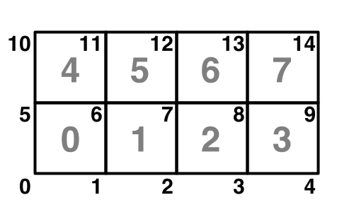
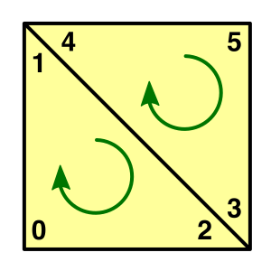
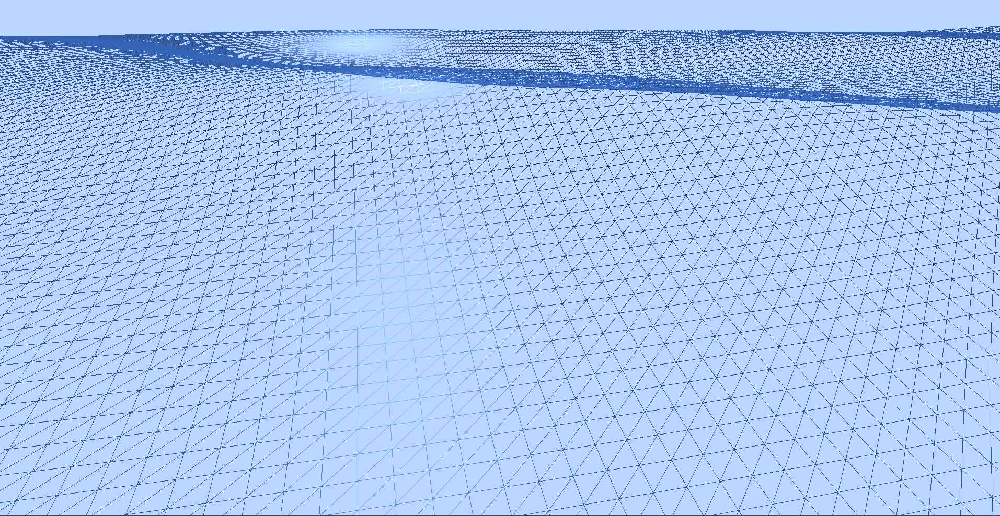
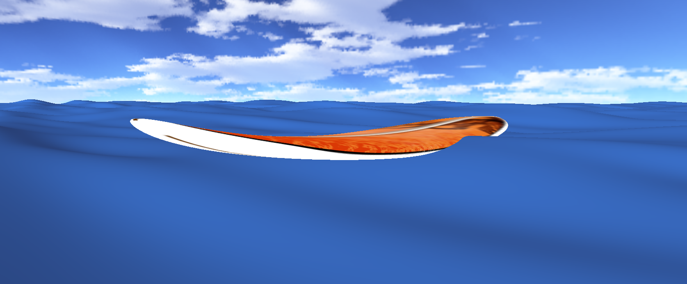
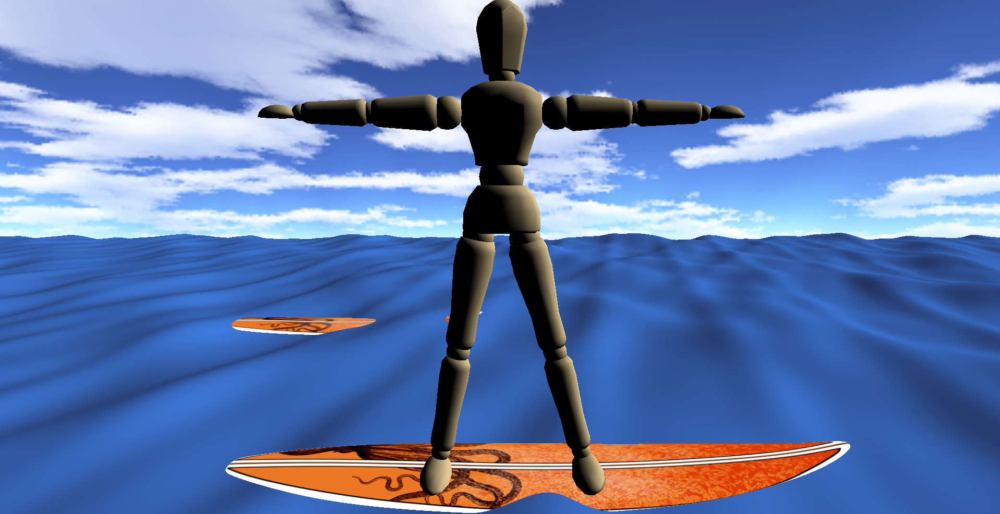

<!DOCTYPE html>

<html lang="en">
  <head>
    <meta charset="utf-8" />

    <title>Ocean Simulation</title>
  </head>

  <script src="https://polyfill.io/v3/polyfill.min.js?features=es6"></script>
  <script
    id="MathJax-script"
    async
    src="https://cdn.jsdelivr.net/npm/mathjax@3/es5/tex-mml-chtml.js"
  ></script>

  <style>
    * {
      margin: 0;
      padding: 0;
      box-sizing: border-box;
    }

    h1,
    h2,
    h3,
    p,
    li {
      color: rgb(232, 230, 227);
      font-family: "Trebuchet MS", "Lucida Sans Unicode", "Lucida Grande",
        "Lucida Sans", Arial, sans-serif;
    }

    h1,
    h2 {
      text-shadow: 2px 2px 2px black;
    }

    h1 {
      font-size: 5em;
    }

    h2 {
      font-size: 3em;
    }

    h3 {
      font-size: 2em;
      margin-top: 1em;
    }

    p {
      font-size: 1.25em;
      margin: 1em 0;
    }

    a {
      color: rgb(51, 145, 255);
    }

    span {
      color: rgb(232, 230, 227);
      font-size: 1.25em;
    }

    img {
      max-width: 100%;
      margin: 1em 0;
    }

    body {
      background: rgb(22, 24, 25);
    }

    .container {
      width: 80%;
      max-width: 1024px;
      margin: auto;
      padding: 2em;
    }

    .jumbotron {
      height: 30vh;

      display: flex;
      justify-content: center;

      background: url("images/jumbotron.png");
      background-size: cover;
      background-position: 0 50%;
    }
  </style>
</html>

<body>
  <div class="jumbotron">
    <div class="container">
      <h1>Ocean Simulator</h1>
      <h2>Brennan Andruss</h2>
    </div>
  </div>
  <div class="container">
    <h3>Description</h3>
    <p>
      The Ocean Simulator is a procedurally generated ocean simulation made
      using C++ and OpenGL for CSC 471: Introduction to Computer Graphics. The
      goal of this project was to create an ocean simulation with dynamic wave
      generation with the sum of sines and buoyancy support for game objects,
      diving into deeper mathematics and algorithms.
    </p>

    <p>
      An additional goal was to delve into systems and graphics programming by
      implementing the OpenGL base code from scratch and implementing
      abstractions for ease of use in initializing and creating scenes. This
      involved exploring the inner-workings of OpenGL and learning some more
      advanced concepts in C++ and OpenGL / GLSL.
    </p>

    

    <hr />

    <h3>Procedural Mesh</h3>
    <p>
      The underlying plane for the water mesh is generated procedurally, with
      parameters to customize the size of the plane and the resolution of the
      plane, which sets the density of triangles making up the surface. Creating
      the plane involves creating a grid of vertices with positions and texture
      coordinates to attach to a vertex buffer object and then triangulating the
      grid by assigning indices to attach to an element buffer object.
    </p>

    

    <h3>Wave Generation</h3>
    <p>
      To support both displacement of the plane vertices on the GPU and the
      ability to query the displacement at any position on the CPU for buoyancy,
      all the waves are generated on the CPU. Waves parameters are set with
      random distributions and a seeded generator, and those parameters are
      packed into a struct and sent to the GPU through a uniform buffer object,
      which is used for passing large amounts of uniform variables. Wave
      parameters include amplitude, frequency, phase constant, and a direction
      vector. The phase constant is multiplied by time to enable animation, with
      time being updated and passed as a uniform to the shader each frame.
    </p>

    <span>
      \[ W_i(x, z, t) = A_i \times \sin\left( \mathbf{D}_i \cdot \begin{bmatrix}
      x \\ z \end{bmatrix} \times w_i + t \times \phi_i \right) \]
    </span>

    <p>
      Any kind of sine function can be used for the waves, so using different
      sine functions can create different waves shapes. For a simple steep sine
      function with sharper wave peaks and wider troughs, a steepness parameter
      'k' is added to the wave struct.
    </p>

    <span>
      \[ W_i(x, z, t) = 2A_i \times \left( \frac{\sin\left( \mathbf{D}_i \cdot
      \begin{bmatrix} x \\ z \end{bmatrix} \cdot w_i + t \cdot \phi_i \right) +
      1} {2} \right) ^ k \]
    </span>

    <h3>Sum of Sines</h3>
    <p>
      The sum of sines method is implemented to displace vertices in the vertex
      shader. Adding together a number of random sine waves effectively creates
      noise, which happens to resemble the surface of an ocean under certain
      initial conditions of the wave parameters. The vertex shader loops through
      each wave at each vertex on the water mesh and sums up the value of the
      sine function at the given position and point in time.
    </p>

    <span> \[ H(x, z, t) = \sum_{}^{} (W_i(x, z, t)) \] </span>
    <span>\[ \mathbf{P}(x, z, t) = \left(x, H(x, z, t), z \right) \]</span>

    

    <h3>Surface Normals</h3>
    <p>
      For general surfaces with unknown normals, the normals at each vertex can
      be calculated by averaging the face normals of the adjacent faces, which
      is a finite-difference technique. This would involve multiple more
      summations to get the positions of neighboring vertices.
    </p>

    <p>
      However, because the surface has an explicit function, the normals can be
      calculated at any given point directly. Binormal and tangent vectors can
      be obtained from the partial derivatives in the x and z directions,
      respectively, and then crossed to derive the normal vector.
    </p>

    <span>
      \[ \mathbf{T}(x, z) = \frac{\partial }{\partial x}(\mathbf{P}(x, z, t)) \]
    </span>
    <span>
      \[ \mathbf{B}(x, z) = \frac{\partial }{\partial z}(\mathbf{P}(x, z, t)) \]
    </span>
    <span>
      \[ \mathbf{N}(x, z) = \mathbf{B}(x, z) \times \mathbf{T}(x, z) \]
    </span>

    <p>
      These partial derivatives can be calculated in the same loop as the sum of
      sines displacements, since the derivative of a sum is the sum of the
      derivatives. The vertex shader does all the summations for displacement
      and partials and then derives the normal vector with the summed partials
      before passsing data through to the fragment shader for lighting.
    </p>

    <span>
      \[ \frac{\partial }{\partial x}(H(x, z, t)) = \sum_{}^{} (\frac{\partial
      }{\partial x}(W_i(x, z, t))) \]
    </span>

    <h3>Buoyancy</h3>
    <p>
      To fake buoyancy physics, I matched the height of my models to the water
      by querying the displacement at their positions, using the same sum of
      sines calculations as the vertex shader but for a single position. With
      some adjustments, this same logic can also be used to query the surface
      normal and apply a rotation to the model so that it matches the
      orientation of the waves.
    </p>

    

    <hr />

    <h3>Game Objects</h3>
    <p>
      To abstract and reuse the process of configuring materials and
      transformation matrices when drawing, I created a bare-bones
      implementation of Unity's GameObject class. Each GameObject contains a
      transform struct, a material struct holding shader and texture
      information, and a mesh struct holding the vertex data. Each of these
      structures can be created or attached as pointers during initialization,
      and then the GameObject will handle configuration by obtaining a model
      matrix and setting the appropriate shader uniforms before making the draw
      call to OpenGL.
    </p>

    <h3>Hierarchies</h3>
    <p>
      To handle multi-shape meshes, I implemented a hierarchy of GameObjects
      using a tree data structure, with the creation of the hierarchy being
      handled during initialization. Drawing the hierarchy will recursively
      traverse the tree, making draw calls on each GameObject and passing down
      its transform component to the children GameObjects with each depth of
      recursion. This process implicitly creates the matrix stack needed for
      hierarchical modeling, abstracting away the manual creation of the stack
      and allowing you to pose models by simply adjusting transform values at
      the joints.
    </p>

    

    <p>
      Beyond hierarchical models, a hierarchy can be created containing all the
      GameObjects in the scene so that nearly the entire scene can be rendered
      with a single call to the scene hierarchy.
    </p>

    <h3>Camera</h3>
    <p>
      Taking more inspiration from Unity, I implemented its flythrough camera
      for my program, supporting acceleration-based movement in all six
      directions along the camera's basis vectors. Rotation is handled with
      cursor movement in the window, and the window traps the cursor when it is
      clicked to enable unbounded rotations in any direction (within pitch
      constraints).
    </p>

    <p>
      The camera class also takes advantage of uniform buffer objects. UBOs
      exist in shared GPU memory, so since everything in the scene uses the same
      perspective and view matrices, we can effectively turn them into global
      uniform variables. The camera can set them once at initialization and
      update them as needed in one place, and those transformation matrices will
      be available to all shaders by accessing the buffer's binding point. The
      class can be responsible for managing the view matrix whenever it moves
      along with the perspective matrix whenever the window resizes or the
      camera zooms.
    </p>

    <hr />

    <h3>Resources</h3>
    <p>
      <b>Acerola</b><br />
      <a
        href="https://youtu.be/PH9q0HNBjT4?si=43gUh4HcPH4GiODT"
        target="_blank"
      >
        How Games Fake Water
      </a>
    </p>
    <li>Main inspiration and resource for the project</li>
    <p>
      <b>GPU Gems (by NVIDIA)</b><br />
      <a
        href="https://developer.nvidia.com/gpugems/gpugems/part-i-natural-effects/chapter-1-effective-water-simulation-physical-models"
        target="_blank"
      >
        Effective Water Simulation from Physical Models
      </a>
    </p>
    <li>Primary source for the sum of sines technique and the math involved</li>
    <p>
      <b>Catlike Coding</b><br />
      <a
        href="https://catlikecoding.com/unity/tutorials/procedural-grid/"
        target="_blank"
      >
        Procedural Grid
      </a>
    </p>
    <li>
      A previous tutorial I followed to procedurally generate a square grid
    </li>
    <p>
      <b>LearnOpenGL</b><br />
      <a
        href="https://learnopengl.com/Advanced-OpenGL/Advanced-GLSL"
        target="_blank"
      >
        Advanced GLSL </a
      ><br />
      <a
        href="https://learnopengl.com/Advanced-OpenGL/Advanced-Data"
        target="_blank"
      >
        Advanced Data </a
      ><br />
      The "Getting Started" Series
    </p>
    <li>
      The tutorials I followed to learn the machinery behind OpenGL and GLSL
    </li>
    <br />

    <hr />

    <p>
      Source Code:
      <a href="https://github.com/BrennanAndruss/OceanSim" target="_blank"
        >OceanSim</a
      >
    </p>
  </div>
</body>
